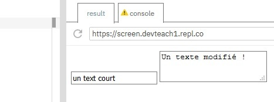
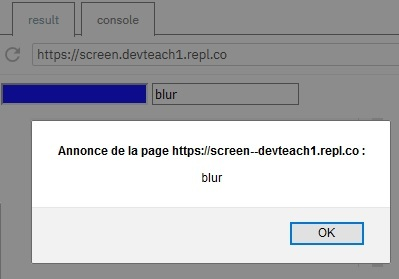

Notre formulaire HTML est en place, nous savons sélectionner ses éléments par l'intermédiaire du DOM. Il est temps d'interagir avec ces derniers. Nous allons voir comment afficher les données saisies par l'utilisateur et comment écrire dans un champ texte.
Afin d’accéder à la valeur d'une zone de texte (text ou textarea) on usera de la propriété value de l'élément du DOM correspondant. En modifiant value, nous serons donc capables de changer la valeur de la zone de texte.
Nous pourrons lier deux événements spécifiques : focus et blur. L’événement focus est appelé lors de la mise au point tandis que l’événement blur l’est lors de la perte de la mise au point.
See the Pen Untitled by OpenSpirit (@OpenSpirit) on CodePen.
See the Pen Untitled by OpenSpirit (@OpenSpirit) on CodePen.
Les événements focus et blur peuvent être utilisés pour apporter des éléments d'information avant et/ou après la saisie d'une valeur. Pour les mettre en place, nous allons devoir créer les écouteurs d'événements associés.
See the Pen Untitled by OpenSpirit (@OpenSpirit) on CodePen.
Pour plus de précisions concernant les écouteurs d'événements, reportez-vous au cours sur la Programmation événementielle.
Il est tout à fait possible de procéder à la modification de style lors du focus par le biais du CSS. Il s’agit d’une approche plus abordable de par sa facilité d’exécution.
Nous retrouvons ci-dessous, un formulaire contenant une zone de saisie de type texte.
See the Pen Untitled by OpenSpirit (@OpenSpirit) on CodePen.
La pseudo-classe d'action CSS :focus va permettre d’assigner des propriétés CSS à notre élément HTML.
See the Pen Untitled by OpenSpirit (@OpenSpirit) on CodePen.
Gardons toujours à l'esprit que l'ajout d'écouteurs d'événements peut être coûteux pour votre navigateur. De plus, l'événement focus est déclenché en permanence tant que le champ en question est cliqué. Attention donc aux mauvaises surprises.
Nous pouvons également donner le focus à un champ, ou l'enlever en invoquant sur notre élément les méthodes focus() et blur().
See the Pen Untitled by OpenSpirit (@OpenSpirit) on CodePen.